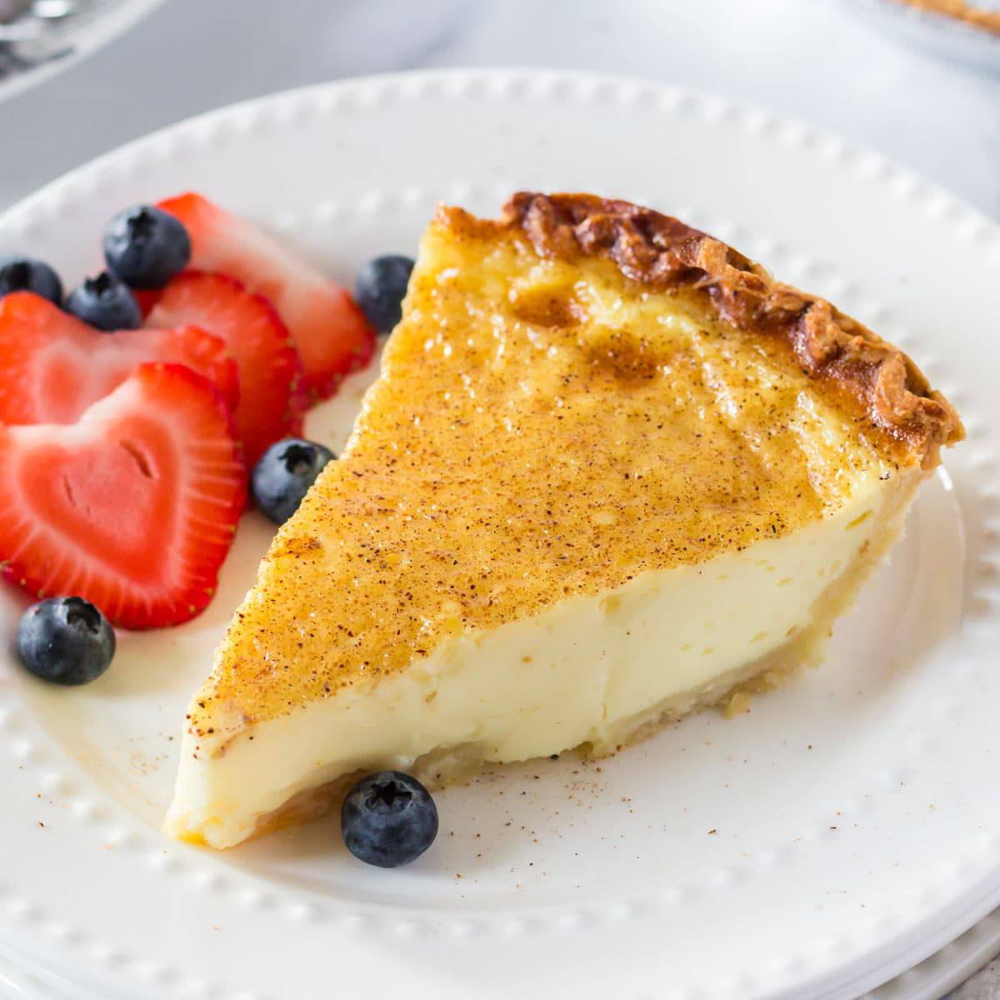

Egg custard pie is a light-tasting, sweet treat. This is is an ideal summer dessert because it isn't too heavy while still adding a nice finish to any meal. Or as a little afternoon delight. At just 244 calories per slice, this easy dessert recipe isn't going to put you over the top!
Ingredients
- 1 (9 inch) unbaked pie crust
- 1 cup white sugar
- 1 cup milk
- ¼ cup butter, melted
- 2 tablespoons all-purpose flour
- 1 teaspoon vanilla extract
- ½ teaspoon ground nutmeg
- 3 large eggs
Steps:
- Preheat the oven to 400 degrees F (205 degrees C).
- Bake pie crust in the preheated oven until partially baked, about 5 minutes. Set aside.
- Adjust oven temperature to 325 degrees F (165 degrees C).
- Combine sugar, milk, melted butter, flour, vanilla, and nutmeg in a large bowl; mix well. Beat in eggs until well blended. Pour filling into partially baked pie shell.
- Bake in the preheated oven until a knife inserted in the center comes out clean, 45 to 55 minutes. Do not overbake.